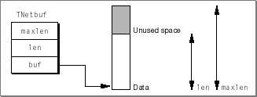

Specifying an Address
This section explains the format of Open Transport addresses and the structure used to specify an address. This section also introduces helper routines that can do some of the work in creating these structures for you.Addressing in Open Transport
Addresses in Open Transport all begin with a common structure that is followed by protocol-specific fields. The common structure is defined by theOTAddresstype:struct OTAddress { OTAddressType fAddressType; UInt8 fAddress[1]; }; typedef struct OTAddress OTaddress;TheOTAddresstype itself is abstract. You would not declare a structure of this type because it does not contain any address information. However, address formats defined by Open Transport protocols all use thefAddressTypefield to describe the format of the fields to follow, which do contain address information. For example, theDDPAddresstype is an address format used by the AppleTalk protocol:struct DDPAddress { OTAddressType fAddressType; /* must be AF_ATALK_DDP */ UInt16 fNetwork; UInt8 fNodeID; UInt8 fSocket; UInt8 fDDPType; UInt8 fpad; };Open Transport recognizes this address as a DDP address because the first field of the address isAF_ATALK_DDP.Address formats are protocol-specific. The protocol you choose determines the address format that the endpoint you connect to or listen from will accept. For example, if you're using an AppleTalk protocol, you have the choice of using a DDP, an NBP, or a DDP/NBP address format. When you use TCP/IP, you have the choice of the InetAddress format or the DNS address format.
Using TNetBuf Structures
Most provider functions that transfer data pass a parameter of typeTNetbufthat specifies the size and location of the data. Such data is usually an address, option information, or the actual data that you want to transfer. You can think of theTNetbufstructure as Open Transport's universal bucket, used to pass and receive different kinds of information. Figure 2-1 shows how theTNetbufstructure refers to data in memory.Figure 2-1 The
TNetbufstructure
The structure is composed of three fields: the
buffield, thelenfield, and themaxlenfield. Thebuffield contains the beginning address of the data; thelenfield specifies the size of the data; and themaxlenfield specifies the maximum amount of data that can be stored in the buffer. How you use this structure depends on whether the structure specifies an input or output parameter:There are two situations in which you would not use a
- If you are sending information (the structure is used to specify an input parameter), you must allocate a buffer and initialize it to contain the data you want to send. Then you must set the
buffield to point to the buffer and set thelenfield to specify the size of the data.You may always allocate
TNetbufstructures for input parameters on the stack.- If you are receiving information (the structure is used to specify an output parameter), you must allocate a buffer into which the function can place the information when it returns. Then you must set the
buffield to point to the buffer and set themaxlenfield to specify the maximum size of the data that could be placed in the buffer. When the function returns, it sets thelenfield to the actual size of the data.If you are making asynchronous calls that use
TNetbufstructures as output parameters, you should allocate theTNetBufstructures (and the buffers they point to) such that they persist until the operation completes. Typically, this means thatTNetbufstructures for output parameters should only be allocated on the stack if the call is synchronous.TNetBufstructure to store data: when sending noncontiguous data, or when doing a no-copy receive. For additional information about how you should handle these situations, see "Advanced Topics."Storing an Address in a TNetBuf Structure
When you pass an address to Open Transport, you use aTNetBufstructure. Listing 2-1 shows how you might initialize that structure. The listing initializes a DDP address, stores the address in aTNetBufstructure, and then passes that address in theconnectCallparameter to theOTConnectfunction to connect to a remote peer. Note that theaddrfield is also aTNetBufstructure.Listing 2-1 Using a TNetBuf structure to store an address
void OSStatus MyConnectDDP (EndpointRef ep, UInt16 connectNetworkNumber, UInt8 connectNodeID, UInt8 connectSockID) { OSStatus err; TCall connectCall; DDPAddress connectAddr; /* initialize the DDP address to connect to */ connectAddr.fAddressType = AF_ATALK_DDP; connectAddr.fNetwork = connectNetworkNumber; connectAddr.fNodeID = connectNodeID; connectAddr.fSocket = connectSockID; connectAddr.fDDPType = 0; /* initialize the TNetBuf that contains the address */ OTMemzero(connectCall, sizeof(TCall)); connectCall.addr.buf = (UInt8 *) &connectAddr; connectCall.addr.len = sizeof(DDPAddress); /* now pass the address to Open Transport */ err = OTConnect(ep, &connectCall, nil); return err; }Using Helper Routines to Initialize an Address
Some Open Transport protocols export routines that make the job of initializing addresses simpler. For example, Listing 2-2 shows how you can use the functionOTInitDDPAddressto simplify some the work done in Listing 2-1.Listing 2-2 Using Helper Routines to Initialize an Address
void OSStatus MyConnectDDP (EndpointRef ep, UInt16 connectNetworkNumber, UInt8 connectNodeID, UInt8 connectSockID) { OSStatus err; TCall connectCall; DDPAddress connectAddr; /* initialize the DDP address to connect to */ OTInitDDPAddress(&connectAddr, connectNetworkNumber, connectNodeID, connectSockID, 0); /* initialize the TNetBuf that contains the address */ OTMemzero(connectCall, sizeof(TCall)); connectCall.addr.buf = (UInt8 *) &connectAddr; connectCall.addr.len = sizeof(DDPAddress); /* now pass the address to Open Transport */ err = OTConnect(ep, &connectCall, nil); return err; }These helper routines are especially important when an address has a variable length. For example, a DNS address, used by the TCP/IP protocol, is defined as follows:struct DNSAddress { OTAddressTYpe fAddressType; /* always AF_DNS */ InetDomainName fName; }; typedef struct DNSAddress DNSAddress;ThefNamefield of this structure can vary in length. You must pass a DNS address in aTNetBufstructure that gives the correct length of the entire address. The helper routine,OTInitDNSAddress, not only fills in the fields of theDNSAddressstructure but also returns the correct length for theTNetBuf.lenfield. This technique is shown in Listing 2-4 .
Subtopics
- Addressing in Open Transport
- Using TNetBuf Structures
- Storing an Address in a TNetBuf Structure
- Using Helper Routines to Initialize an Address